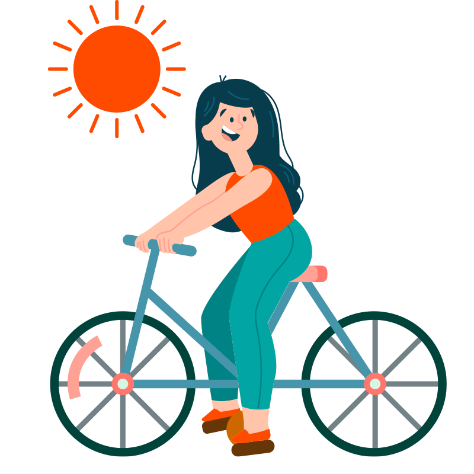

Does the Swiss population bike through wind, rain, and shine?
We want to find out if the weather really makes a difference when it comes to renting bikes. To do this, we analyzed data from several Swiss cities, looking at local weather conditions and comparing it to bike rental data from the Publibike app. By examining how many bikes were rented under various weather conditions, we aim to understand if factors like rain, sun, or temperature have a significant impact on people's decision to rent a bike.
